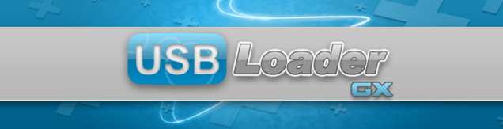

USB Loader GX
Jeżeli potrzebujesz pomocy z czymkolwiek dotyczącym tego poradnika, dołącz do serwera RiiConnect24 na Discordzie (wsparcie dostępne po Polsku!) lub napisz do nas na [email protected].
To jest poradnik dotyczący USB Loader’a GX, popularnego loadera USB, który pozwala Ci na granie w gry z Twojego urządzenia USB (Dysk twardy, pendrive).

Będziesz potrzebował
- Konsola Wii
- Dysk USB / Pendrive
- USB Loader GX
Upewnij się, że zainstalowałeś cIOS przed skorzystaniem z USB Loader’a GX.
Rekomendujemy instalację gier korzystając z Wii Backup Manager jeżeli korzystasz z Windowsa oraz Witgui jeżeli z macOS lub Wii Backup Fusion jeśli korzystasz z Windowsa, macOS i Linuxa.
Jeśli chcesz grać w gry w formacie NKit, użyj tego programu, aby najpierw przekonwertować je do ISO. Możesz również użyć deweloperskiej wersji Dolphin’a, kliknij prawym przyciskiem myszy na grę i użyj “Konwertuj plik”, aby ją przekonwertować.
Jeśli nie instalujesz gier korzystając z Wii Backup Manager lub Witgui, stwórz folder w głównym folderze Twojego dysku USB lub karty SD o nazwie “wbfs” i skopiuj tam gry.
Aby grać w gry, zalecamy użycie dysku twardego zewnętrznego na USB. Napęd płomienia również powinien być użyteczny, ale zalecane są zewnętrzne dyski twarde, ponieważ są bardziej niezawodne i mogą przechowywać więcej gier.
Upewnij sie, że Twoje urządzenie USB jest sformatowane jako FAT32 lub NTFS. Do not format it as other types such as exFAT, extFS, or WBFS, the latter is an old format of storing Wii games.
Instrukcje
Pobieranie
- Wypakuj USB Loader GX oraz skopiuj go do folderu
appsna Twojej karcie SD lub urządzeniu USB. - Włóż Twoje urządzenie USB lub kartę SD do Twojej Wii oraz uruchom USB Loader GX korzystając z Homebrew Channel.
Wprowadzenie
Nie ma “poradnika” dotyczący tego jak korzystać z USB Loader GX. Poniższe informacje mają na celu nauczyć cię jak korzystać z interfejsu, aby zapewnić Ci szybki start. Powinieneś się dowiedzieć jak korzystać ze wszystkich funkcji USB Loader’a GX poprzez korzystanie z niego.
- Jeżeli po uruchomieniu USB Loader’a GX na ekranie wyświetla się “Waiting for HDD…” z 20 sekundowym odlicznikiem czasu, prawdopodobnie USB Loader GX nie był w stanie znaleźć Twojego urządzenia USB. Spróbuj uruchomić program ponownie oraz włożyć urządzenie USB do innego portu w Twojej Wii.
- Możesz nacisnąć
1na Twoim kontrolerze aby otworzyć okno pobierania okładek gier ze strony GameTDB. W zależności od tego ile masz gier, pobieranie okładek może chwile zająć. - Istnieją pliki WAD, które są skrótami do USB Loader’a GX, które możesz otworzyć bezpośrednio z Wii Menu. Są one nazwane “forwarder WAD”. Oficjalny forwarder możesz znaleźć (tutaj)[http://sourceforge.net/projects/usbloadergx/files/Releases/Forwarders/USB%20Loader%20GX-UNEO_Forwarder_5_1_AHBPROT.wad], wersje dla vWii (Wii U) znajdziesz (tutaj)[http://sourceforge.net/projects/usbloadergx/files/Releases/Forwarders/USB%20Loader%20GX-UNEO_Forwarder_5_1_AHBPROT_vWii%20%28Fix%29.wad.
- Gry z GameCube lub gry homebrew na Wii mogą nie mieć niestandardowego banneru z którego korzysta USB Loader GX. Aby włączyć tą funkcję, znajdź lub wpisz
CustomBannersURL = http://banner.rc24.xyz/do plikuconfig/GXGlobal.cfgna Twoim urządzeniu USB. Po zrobieniu tego, możesz zacząć korzystać z “Custom Bannerów”, które możesz pobrać naciskając1na Twoim kontrolerze.
Interfejs graficzny
Na interfejsie USB Loader’a GX znajdziesz wiele przycisków.
Menu główne
Poniżej opisane są funkcje przycisków, które możesz znaleźć na samej górze interfejsu w kolejności od lewej do prawej:
- Ulubione - Pokazuje gry, które oznaczyłeś jako ulubione.
- Wyszukaj - Pozwala Ci wyszukać gry po ich nazwie.
- Sortuj - Zmienia metody sortowania gier.
- Platforma - Sortuje gry według platformy.
- Kategoria - Sortuje gry według ich kategorii.
- Lista - Pokazuje gry w układzie listy.
- Widok wielu okładek - Pokazuje kilka okładek na ekranie.
- Karuzela - Pokazuje gry w stylu karuzeli.
- Widok Wii Menu - Pokazuje gry według stylu Wii Menu.
- Kontrola rodzicielska - Zablokowuje ustawienia USB Loader GX za hasłem.
- Płyta - Pozwala Ci uruchomić grę z płyty.
Aby uruchomić grę, naciśnij na okładkę/wpis oraz naciśnij na “Start”.
Istnieją również inne przyciski na interfejsie:
- (+) Ikona - “Zainstaluj” grę, tzn. stworzenie jej kopii zapasowej.
- Koło zębate - Ustawienia USB Loader’a GX.
- Karta SD - wymontuj oraz zamontuj kartę SD.
- Homebrew - Załaduj listę aplikacji homebrew.
- Wii - Otwiera menu HOME, które możesz również przywołać poprzez naciśnięcie przycisku HOME na Twoim kontrolerze.
- Przycisk zasilania - Wyłącz Twoje Wii.
Po środku na dole ekranu, możesz zobaczyć ile miejsca jest wolnego na Twoim urządzeniu USB i ile gier jest zainstalowanych.
Continue to RiiTag
RiiTag is a customizable gamertag for your Wii that USB Loader GX can integrate with. This is optional to set up.
Przejdź do spisu stron
Mamy wiele innych poradników, które mogą Ci się przydać.